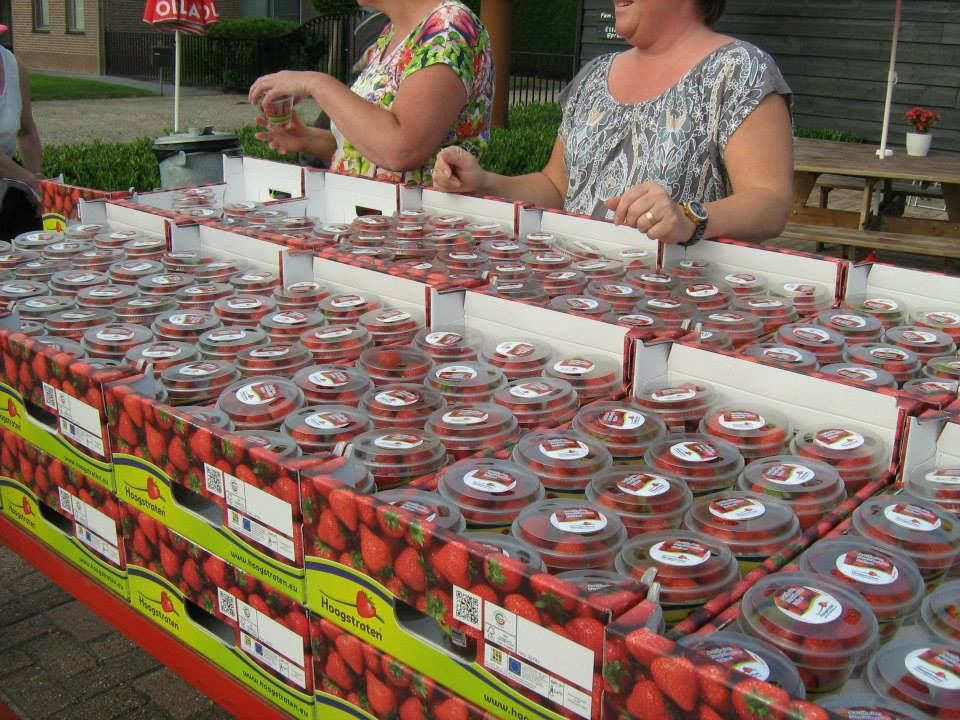
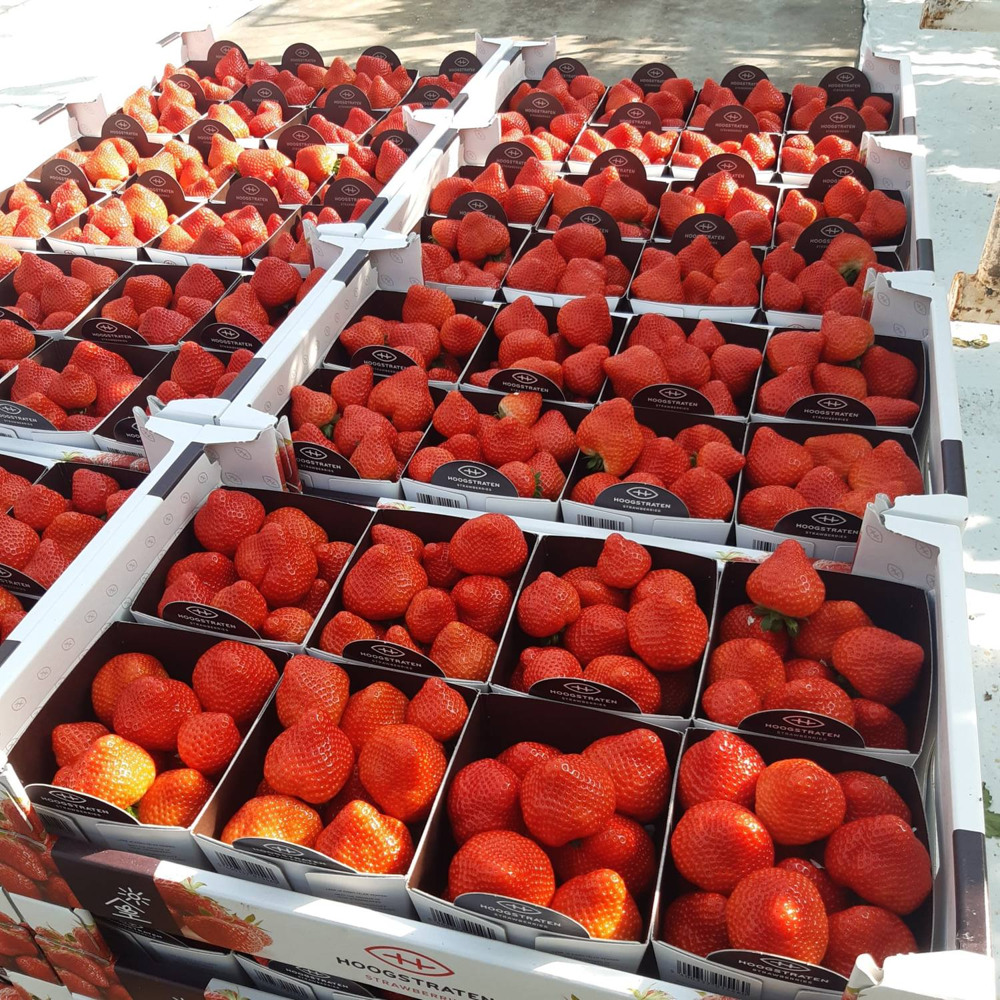
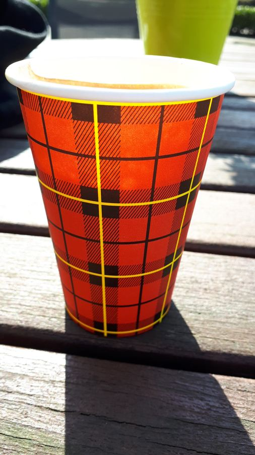
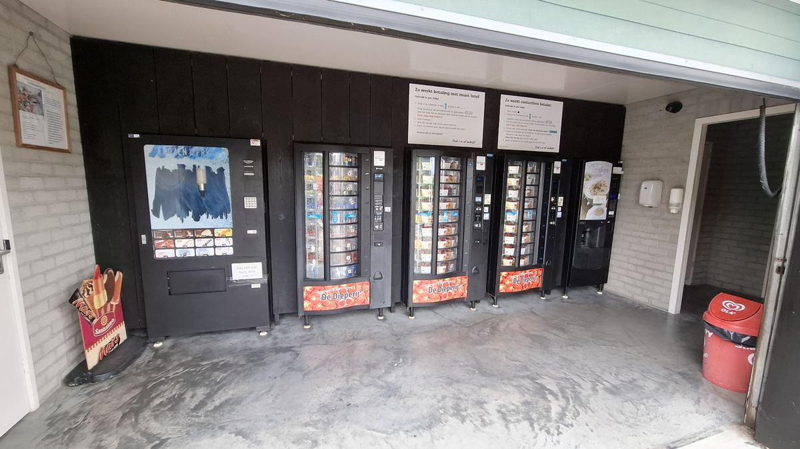
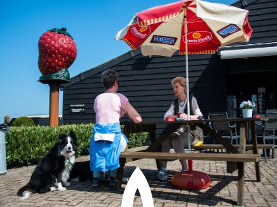
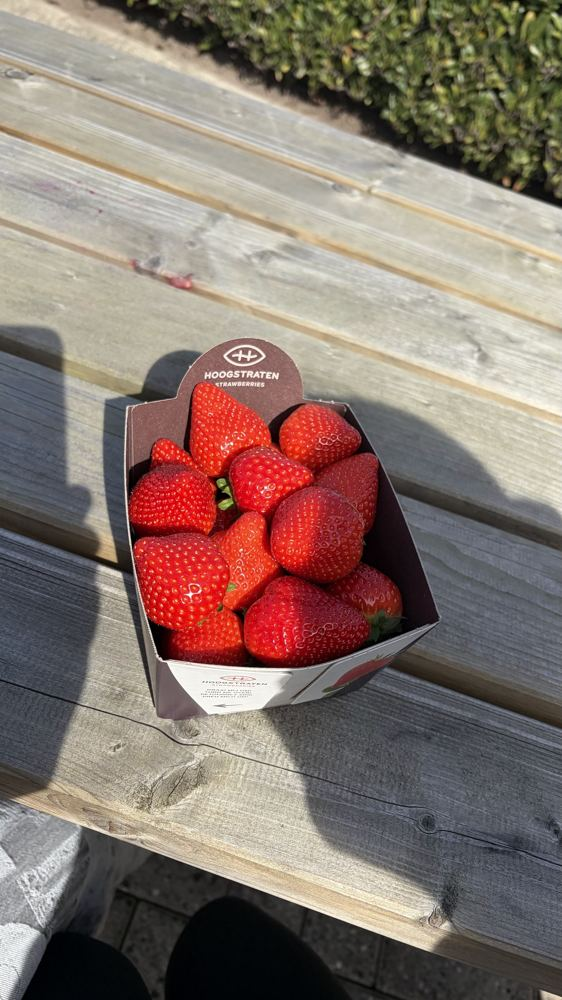
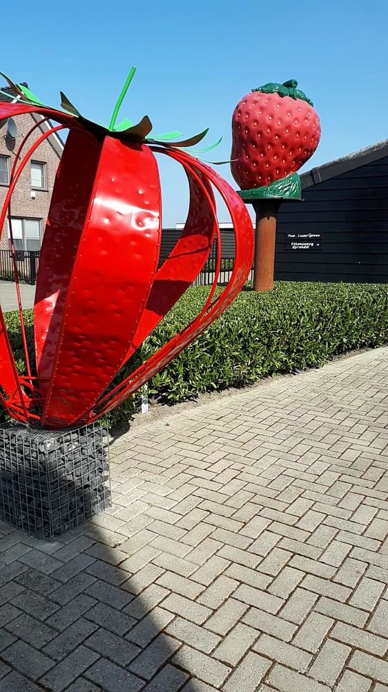
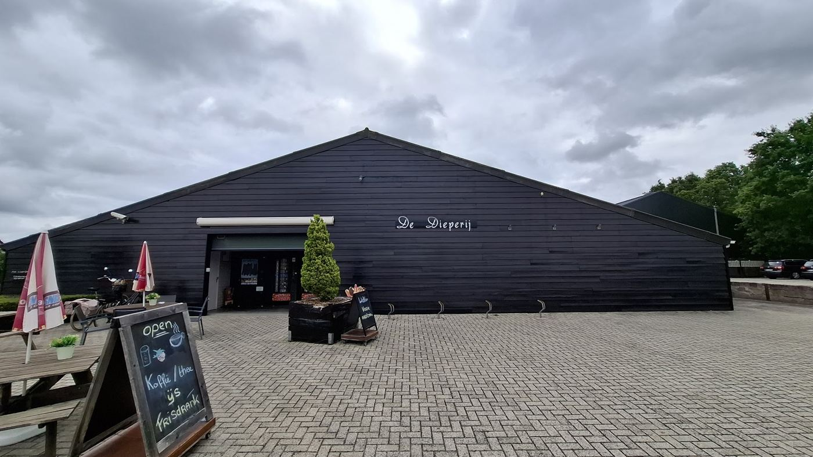

Verse aardbeien
Iedere dag vers, rechtstreeks uit onze eigen kwekerij.

Iedere dag verse aardbeien aan de Ettenseweg in Sprundel, uit de automaat of op ons terras met een kop koffie of een huisgemaakte aardbeienflap. Van april t/m december elke dag open vanaf 9:00.
Heel veel keuze en hele lekkere verse aardbeien!Xander, via Google
De aardbeien komen uit onze eigen kwekerij. Meenemen of ter plekke opeten, het kan allebei.

Iedere dag vers, rechtstreeks uit onze eigen kwekerij.





Fiets of wandel je in de buurt van Sprundel? Stop even bij ons voor een bakje verse aardbeien en een kop koffie aan de picknicktafel.
Je herkent ons aan de zwarte schuur met de grote aardbeien bij de ingang.
Haal je aardbeien zelf uit de automaat, ook als er even niemand op het erf is.
Kijk welk bakje je wilt hebben en onthoud het vakje.
Kies je vakje op de automaat en reken af.
Het vakje gaat open en je neemt je bakje mee.
Stuur ons een WhatsApp-bericht met het nummer van het vakje. Dan lossen we het op.

De Dieperij is het aardbeienbedrijf van de familie Lauwrijssen aan de Ettenseweg in Sprundel. We telen onze aardbeien zelf, op stellingen en in de kas. Wat je bij ons koopt, komt dus rechtstreeks van ons eigen bedrijf.
Heel veel keuze en hele lekkere verse aardbeien!Xander, via Google
Super lekkere aardbeien!Elin, via Google
De aarbeien dit jaar zijn echt lekker.Arjen, via Google
Je vindt ons aan de Ettenseweg 4 in Sprundel. Vragen? Bel of app ons gerust.
Ons seizoen loopt van april tot en met december.